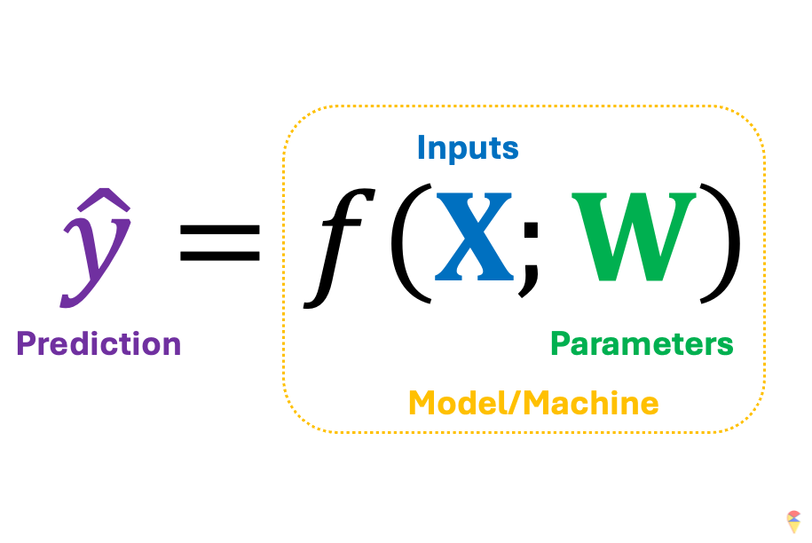
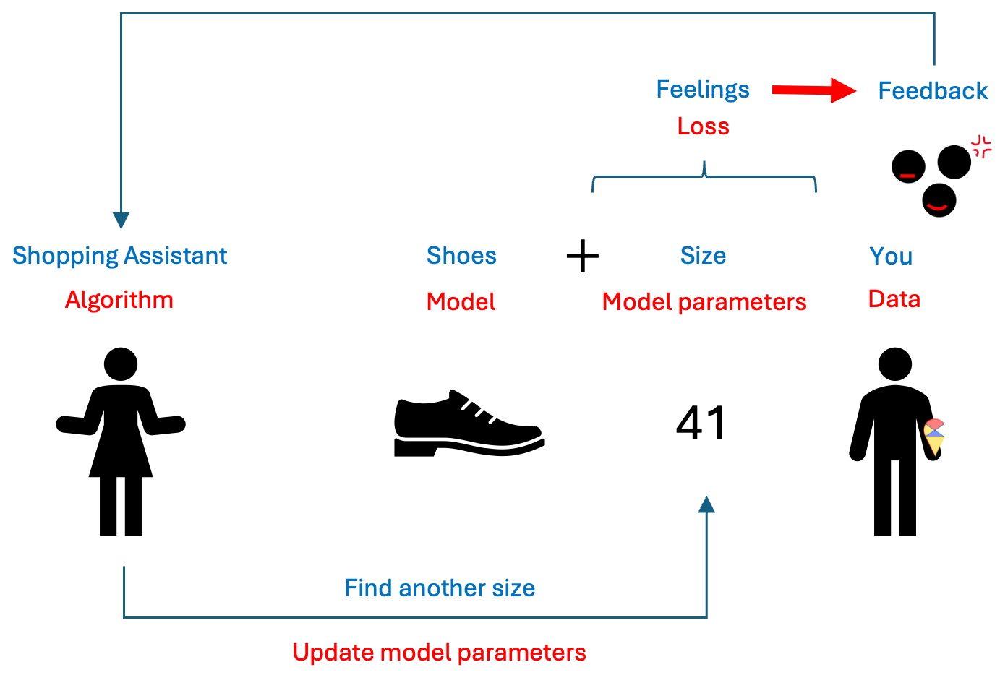
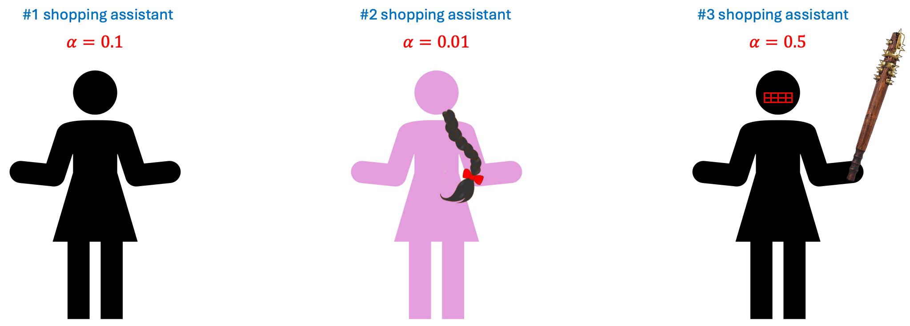
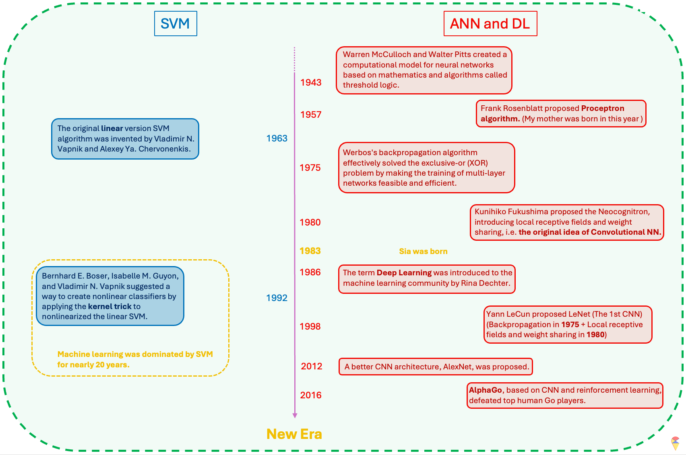

Lecture 3: Artificial Neural Networks and Deep Learning
In recent years, deep learning has achieved remarkable success across various domains, including image and speech recognition, natural language processing, and more. This success has transformed industries and fueled advancements in artificial intelligence. Deep learning is a subset of machine learning models that fundamentally based on artificial neural networks (ANN). ANN is not a new concept; they were introduced well before the era of deep learning and its prominent models. The foundational ideas of neural networks date back to the mid-20th century, laying the groundwork for what would eventually evolve into the sophisticated deep learning techniques we see today.
1. Introduction
If you have tried to understand ANN before, it may not have seemed very user-friendly to you. The large and complex model can indeed be difficult to grasp. However, regardless of that, ANN is still a machine learning model, containing all the essential elements of a machine model. So, what are the basic elements of a machine learning model? Next, let’s review what we mean by a machine learning model first.
Model/Machine
Mathematicians are right. Essentially, any machine learning model can be understood as a transformation \(f\) that converts feature variables into predictions. The type of model is determined by \(f\), which can be a simple linear classifier or other complex nonlinear models, while its specific characteristics are controlled by parameters. In other words, a successful machine learning model consists of the right model class \(f\) plus the appropriate parameters \(w\).
In the first part of the course, we used cars as a metaphor when we discussed the hyper-parameters, and now I’d like to introduce another one: shoes. Shoes come in various types, and we choose different kinds based on our purposes. For example, if you’re going to the beach, you definitely wouldn’t bring a lot of high heels. In machine learning, we determine which model to use based on the problem type, variable types, and sample size. Once you’ve determined the type of shoe you need, you then select the specific model and size that fits you best. In this analogy, the type of shoe represents \(f\), while the specific shoes model is hyper-parameter that you have to determine it first, and the size is model parameter \(w\). To complete the analogy, the input \(X\) would be your foot, and the output \(y\) would be your comfort or experience.
Do you like this metaphor, well I’ll be using it again later. Now, we can embark on our journey toward understanding ANN.
2. The Road to Artificial Neural Networks
Textbooks typically introduce neural network models using fundamental Logical operation model. That approach is useful—I used to rely on it as well—but I’ve found that students often struggle with it. It can be challenging to grasp the essence of neural networks, let alone deep learning, in a clear and direct way. Here, my plan is to use Model Graphicalization along with PCA to lay the groundwork for understanding neural network models.
2.1 Model Graphicalization
Mathematicians always take a bird’s-eye view of the world, seeking out its most fundamental elements. The symbolic representation of a machine learning model is both concise and insightful, constantly reminding us of what truly matters. However, this notation is so minimalistic that it overlooks many details, while the earlier graphical representation is too cumbersome and impractical for expressing more complex models. Next, we introduce a more efficient graphical method.
Model Representation
2.2 Is PCA also a machine?
Of course, the answer is positive. If we understand PCA through the concept of image reconstruction, it is indeed a “machine” (a machine learning model). It is a transformation where the input consists of all the original variables, and the output is the reconstructed original variables. The specific performance of the model depends on all the PC weights.
That being the case, let’s now apply the graphical representation to this model.
PCA is also a Machine
Similar to the basic elements we discussed in the previous models, we also have inputs, outputs, hyperparameters, and model parameters here. Isn’t it fascinating? PCA can be seen as a very special kind of “machine.” Rather than focusing on its output, we are more interested in its internal byproducts—the principal components (PCs), \(\textbf{Z}\). This is mainly because our ultimate goal is to use the feature variables extracted by PCA to predict our predefined target variable. In other words, it is an intermediate step.
But do you remember the limitations of PCA that we mentioned in the first lecture? Yes, PCA is a linear feature extraction method, which means it has low flexibility. However, in complex problems, we often need more flexible nonlinear feature extraction methods to create new variables. So, can we improve PCA? Again, the answer is positive.
Nonlinear PCA: AutoEncoder
We are now very close to understanding neural network models and even deep learning models. However, we still need to clarify one concept: end-to-end learning.
2.3 Traditional Model vs New Age Model
Next, let’s discuss a broader question: the fundamental workflow to machine learning modeling. Yes, the process of building machine learning models follows a regular routine. However, deep learning marks a clear boundary where traditional and modern modeling approaches diverge significantly.
Simply put:
- Traditional modeling follows a two-step approach.
- Modern modeling, especially in deep learning, follows an end-to-end approach.
Let me explain in detail with the following slides.
End to End Learning
So how can we implement this end-to-end approach in practice? Let’s return to a powerful nonlinear feature extraction model, the autoencoder.
Solution:
Remark: It’s important to note that we usually include a constant term when calculating the score, similar to linear regression. However, for simplicity, we have omitted them in the figures.
This model indeed resembles a large network, but what’s its connection to neurons? Let’s check the figures below. On the far left of the figure is the simple model we discussed earlier. If we replace the input with the neurons from the previous layer and the output with new neurons, we obtain the basic unit of an ANN as shown in the middle. Doesn’t this basic unit look quite similar to a neuron in neuroscience?
People in computer science are indeed great at naming things. Cool names like random forest, support vector machine, and so on pop up all the time in machine learning. However, just like how random forest has nothing to do with a real forest, ANN bears little resemblance to neurons in true neuroscience, both in terms of shape, scale, and working principles. ANN is just a cool name. However, there are scientists who are now researching the use of hardware to replicate real neurons. In my opinion, that could truly be the hopeful light for the future of artificial intelligence. Even with large language models being so popular right now, I still have to say this.
Quiz: Are linear regression models and logistic regression models considered special cases of neural network models?
2.4 On the top of Mount Tai

We have reached the destination of this journey. Just like standing upon Mount Tai, if you have understood the content above, then you have already grasped the fundamental principles of deep learning. Now, let’s take a closer look at our neural network model and name its elements.
ANN components:
Remark: There is one small note regarding the final layer: if our classification problem is a multi-class problem, say \(K\) classes, then we need to generate \(K\) score values from the previous layer. Also, we need to use the so called Soft-Max function as the activation function.
( NE )Soft-Max function is map from \(\mathcal{R}^K\) to \(K\) decimal numbers. Let \(\textbf{s} = (s_1,s_2,\dots,s_K)^{\top}\) as the \(K\) score values in the output layer. The \(k\)th output of Soft-Max function is \[ \sigma(\textbf{s})_k = \frac{e^{s_k}}{\sum_{k = 1}^K e^{s_k}} \]
Quiz:
- What is the range of \(\sigma(\textbf{s})_k\)?
- What is the relationship between logistic function and Soft-Max function?
3. Training Algorithm and Implementation
There is an old Chinese saying: “A sharp sword is forged through grinding, and the fragrance of plum blossoms comes from bitter cold.” Indeed, to see a rainbow, one must first endure a storm. Likewise, to obtain a useful model, it must go through training. The models we discussed in the first part of the course mostly do not require so-called training, such as regression models and LDA models. All parameters can be directly computed using formulas. So, what does model training mean? And how do we train a neural network model? Let’s dive into this question next.
3.1 Traning Problem

Let’s return to this concise mathematical notation. We’ve mentioned that a successful machine learning model depends on the model architecture embedded in \(f\) and the appropriate parameters \(\textbf{w}\). The next question is, assuming we have an appropriate \(f\), how do we obtain a suitable set of \(w\)? First, we need to clarify an important premise: we need data to guide us toward the appropriate parameters, or in other words, we need data to train our model. Next, let’s use the shoes analogy again.

Actually, training a model is a bit like trying on shoes. Once the size is set, the shoe is determined, and then we can put our foot in to feel it. It might feel a little loose, or it could be so tight it’s suffocating. If you really can’t find the right fit, you take a step back, switch to a different style, and look for the right size again.
Next, we need to address two key questions:
- How to measure the ‘feelings’ of the current model? What is the standard for good parameters?
- How to update the parameters?
If you remember the loss function we discussed in the first part of the course, the first question becomes a piece of cake. Simply put, we need to compare the model’s predicted values for each individual’s target variable with the actual values of the target variable to calculate the loss. For example, the loss will be the difference between the true value of target variable and the prediction by the model with a set of values of model parameters. (You will experience this firsthand later in Exercise 1 of the Lab.) The set of parameters that gives us the smallest loss is the set of appropriate values we are looking for. So, the training problem can be represented as an optimization problem.
\[ \min_{\textbf{W}} \mathcal{L}( \textbf{y}, f(\textbf{X}; \textbf{W})) \] where \(\textbf{y}\) is the target variable containing all the target values in a dataset, \(\textbf{X}\) is the data matrix of all possible input features, and \(\textbf{W}\) contains all the model parameters. That is, we want to find a set of model coefficients that minimize the model’s loss.
This is somewhat like selecting hyperparameters in a model selection problem. The difference is that we can use algorithms to handle this tedious task. This algorithm is like a shopping guide. It helps you find a better shoe size based on your feedback on comfort until you feel it fits perfectly. I summarized this analogy in the image below.

I hope you all have grasped this concept. However, you may have noticed that there isn’t a corresponding term in machine learning under “feedback.” So, what is the feedback that the model receives based on the loss? Let’s talk about some mathematics.
Assuming our loss function is a simple quadratic curve, our goal is to find the set of \(w\) that gives us the smallest loss in the most efficient way possible. Next, we’ll introduce the efficient method to update model parameters.
NOTE: If you don’t want to delve too deeply into the mathematics behind the algorithms, you can temporarily skip the content in the following sections. Just remember, training a neural network model is like trying on shoes; the ‘comfort’ of the shoes is indicated by the loss function. Then, if the shoes are too big, you reduce the size; if they’re too tight, you look for a slightly larger size.
3.2 Gradient Descent Algorithm
Let me reveal the answer. The analogy for “feedback” in model training is the gradient, and the basic algorithm for training models is called the gradient descent algorithm. So, what is a gradient? Let me refer to another activity I am good at: alpine skiing.
Basic Idea of GD algorithm:
The basic principle of using gradient descent to find the optimal parameters is to start from an initial value and adjust the position based on the gradient information at that point, gradually approaching the optimal value. When updating the parameters, we introduce a scaling factor to control the adjustment magnitude, making the process more flexible. This is done by multiplying the gradient value by a constant \(\alpha\) and we call it as learning rate.
In summary, we can express this process using the following iterative formula:
\[ w_{new} = w_{old} - \alpha \cdot \nabla L(w_{old}) \]
where \(w_{new}\) is the updated model parameter; \(w_{old}\) is the current model parameter; \(\alpha\) is learning rate; and \(\nabla L(w_{old})\) is the gradient of the loss function at the current weight. Next, we’ll use a simple example to demonstrate how the gradient descent (GD) algorithm works.
Demo of GD algorithm:
Regarding the learning rate, we can think of it as the working style of the shopping guide (algorithm). Different learning rates lead to different learning outcomes. Let’s look at the following example.

So, which shopping guide would you like to help you choose shoes? Let’s take a look at their performance.


Shopping guide 0.01 is indeed very gentle. She is so meticulous that you might even need to take a fika break in the middle to choose the right shoes. As for Shopping guide 0.5… she’s too impatient, so never mind.
Remark: I want to emphasize that the characteristics of the shopping guides are relative. Whether they are efficient, impatient, or overly gentle depends on the nature of the data itself. Therefore, the learning rate is often considered a hyperparameter. Sometimes, you need to try several shopping guides to ensure you truly find the perfect pair of shoes.
3.3 GD algorithm for training ANN
The loss function of a neural network model is far more complex than the loss function in the example above. There are two key issues here, which I will discuss broadly without going into detail. Additionally, some finer points will be explored further in the next section on deep learning.
First, the loss function of a neural network model is generally a non-convex function. In the R plots below, the left side shows a convex function similar to our previous simple example. The characteristic of a convex function is that starting from any point, we can move toward the optimal value based on the gradient information. On the right side is a simple non-convex function. This type of function has the characteristic of having local optima. This characteristic can lead to many issues, as the algorithm is particularly dependent on the choice of the initial value. With an inappropriate initial value, the gradient information may guide you toward a local optimum rather than the global optimum. Therefore, the choice of the initial value is an important issue. We will leave it at that for now, and we will discuss it further in the Lab and in the next section.

Another issue is that neural network models have many model parameters, unlike the loss function mentioned above, which has only one optimization variable. Additionally, due to the structure of neural network models, we have parameters at different layers. This characteristic makes calculating the gradient values for each model parameter quite complex. Therefore, we typically use the backpropagation algorithm to compute the gradient values. The principle is to first calculate the model’s loss based on the initial model parameters, then compute the gradient for each parameter layer by layer, moving backward from the last layer based on the loss, and finally use the gradient descent algorithm to update the parameters.
Even though these reasons make training neural network models quite complex and sometimes an incomprehensible black box operation, the term “black box” means that we need to iteratively experiment multiple times based on the model’s performance to arrive at the final model. This is somewhat similar to tuning hyperparameters. Nevertheless, when there is sufficient data, we can often train neural network models that perform well.
3.4 Implementation in R

In this course, we use the Keras package to implement the training of neural network models in R. I’ve placed specific introductions, explanations, and operations in the Lab. I recommend that you take a look there before continuing to read. A small gate to Lab: here.
4. Deep Learning
I feel very lucky because we have witnessed a significant historical phase in humanity together. I remember in 2016, I was sitting on bus line 8 in Umeå, watching the live broadcast of the match between the Korean Go player Lee Sedol and AlphaGo on my phone. I was very conflicted at that time. First, I had always been proud of my ancestors for inventing Go (Weiqi), and I didn’t want the final intellectual barrier created by them to be easily overcome by computers. At the same time, I was very interested in the development of machine learning and was eager to see humanity make breakthroughs in the field of artificial intelligence. However, that spring, on the bus, I witnessed the singularity of human development. As a result, AlphaGo defeated Lee Sedol 4-1. Therefore, I am willing to regard the event of AlphaGo, based on deep learning, defeating top human Go players as a major milestone in the field of artificial intelligence.
Remark: It is worth mentioning that the Go player Lee Sedol, who was facing off against AlphaGo, was about to retire and was not considered the number one player in Go at that time. I guess, if the match had been played by the Chinese player Ke Jie, we would have to push this milestone further back. However, when Ke Jie competed a year later, AlphaGo had already evolved into the unbeatable AlphaGo Zero.
4.1 Retrospect

Although we have not yet introduced another famous machine learning model, the Support Vector Machine (SVM), we will use it as a reference to review the history of ANN and deep learning in the development of machine learning. Therefore, I will briefly introduce the characteristics of SVM here. SVM is a nonlinear machine learning model that belongs to the kernel methods family. It primarily uses the concept of feature mapping to nonlinearize a linear model. However, its approach to feature mapping is quite unique. Instead of manually selecting an appropriate feature mapping to get the augmented feature space, SVM employs a mathematical tool called the kernel function to control the final augmented feature space, allowing for a more flexible use of an unknown feature mapping through hyperparameters. (Note: Later, we will encounter the term ‚Äúkernel‚Äù again in convolutional neural networks, but these are entirely different concepts.) Due to the use of kernel functions, along with convex optimization and the concept of reproducing kernel Hilbert space, SVM has gained a strong and solid theoretical foundation. Its flexibility and relatively low data requirements once made SVM the dominant model in the field of machine learning. Even today, you can still find many studies and explorations of deep learning through the perspective of kernel functions. I have a set of quite good notes for learning SVM and kernel methods. I will write them up and publish them on Yggdrasil later. If you‚Äôre interested, stay tuned! üòä

I have summarized the historical review of the field of machine learning in the image above. After reading it, you will realize that ANN is actually a very old concept and idea. The reason why machine learning was not as popular as it is today and was dominated by SVM for 20 years was mainly that the timing was not right—the two most critical factors had not yet matured.
So, what are those two key factors? The first key factor is data. There is an old Chinese saying, “A clever housewife cannot cook without rice.” Indeed, in the era before the internet and digital technology advanced, it was difficult to obtain high-quality data. The number of parameters in neural network models is often staggering, and insufficient data can directly lead to overfitting or even prevent the neural network model from being trained at all. Secondly, computational power is also crucial. Our small smartphones today are much more powerful than the computers of the past. The computational requirements for neural network models and their gradient information are enormous, so this critical factor is not hard to understand. However, the new era has arrived! We now have a much better kitchen now. It’s not just the “clever housewives” anymore—now, everyone can step into the kitchen and cook!

4.2 From Shallow to Deep
Before the success of deep learning, research in the field of machine learning on neural networks was primarily limited to shallow neural network models. These models typically had fewer layers, often just one hidden layer, and were more limited in their ability to capture complex patterns and representations in data. Deep learning specifically refers to machine learning models that utilize deep neural networks, which are neural networks with many layers. These models are capable of learning complex representations of data by processing it through multiple levels of abstraction, hence the term “deep.” So, when you refer to deep learning, it typically involves using deep neural network architectures for tasks such as image recognition, natural language processing, and speech recognition.
Shallow ANN:
Easier to train, more efficient:
Shallow ANN model typically consist of fewer layers and are simpler in structure, which makes them easier and faster to train. With fewer parameters to optimize, the training process is often more efficient and less computationally expensive compared to deeper models.Simpler decision structure:
The decision-making process in shallow ANNs is relatively straightforward. Since the networks have fewer layers, the information flow is less complex, which can sometimes lead to easier interpretability. However, this simplicity limits their ability to model more intricate patterns and relationships within data.Good enough theory:
Theoretical foundations for shallow ANNs are well established and understood. These models work well in many classical machine learning tasks where data is not overly complex. Shallow networks can perform well with simpler datasets, and the theory behind them has been solid for decades.
Deep ANN:
‘Arbitrarily’ powerful:
Deep ANNs are composed of many layers, each learning more complex patterns. This feature have the theoretical potential to model virtually any function and capture highly non-linear relationships in data.More ‘meaningful’ feature extraction:
As the End to End learning method, one of the major advantages of deep networks is their ability to learn hierarchical features in different levels automatically. This ability to perform automatic feature extraction is crucial in fields like computer vision, natural language processing, and speech recognition.More challenges:
Deep networks come with significant challenges. However, apart from lacking a solid theoretical foundation, researchers in the field of deep learning have essentially overcome various challenges. Next, let’s discuss the various solutions that deep learning has developed to face its challenges.
4.3 Challenges and Solutions
Challenge 1: High complexity model. Deep learning models based on deep neural network architectures have a considerable number of model parameters. This means we need to train models with high complexity. When the data volume is insufficient, overcoming the overfitting problem becomes our first challenge. People have approached this problem from both the model and data aspects.
First, in terms of the model, various regularization techniques have been introduced. For example, adding an L2 penalty to the neuron activation function, and introducing practical methods such as dropout learning and early stopping during model training. These methods are easy to understand. I suggest you read textbook sections 10.7.2 to 10.7.4 (pages 436-439).
Secondly, in situations where data is insufficient, many methods have also been proposed to overcome this challenge. For example, data augmentation is a very straightforward method.

In the previous section, we mentioned that the initial values of model parameters are crucial when training a model. A good set of initial values can help us find the optimal model parameters more quickly and avoid getting trapped in local optima. Therefore, based on this idea, concepts such as pre-training, fine-tuning, and transfer learning have also been proposed.
About Pre-training:
In many cases, the size of the dataset itself is substantial, but due to various reasons, the amount of annotated data is limited. In such situations, we can consider pre-training. The general idea is to first train an unsupervised learning model, such as an autoencoder, using a large amount of data. Then, we retain all pre-trained results from the encoder part and connect it to the target variable, forming a neural network model. Finally, we train the neural network model using the pre-trained parameters as initial values.
It is generally believed that, although pre-training lacks the guidance of the target variable, the learned model parameters still hold some significance. Therefore, they can be considered relatively close to the ideal model parameters.
About Pre-trained Model and Transfer Learning: These two strategies have become increasingly popular. A Pre-trained Model refers to a neural network model trained on a large annotated dataset, which is then applied to a smaller annotated dataset with the same model architecture. It is believed that using the parameters of a pre-trained model as the initial values for an optimization algorithm allows for training a better model with less annotated data. This training process is also known as fine-tuning. Fine-tuning is often achieved with the help of freezing. Simply put, this means fixing the parameters of certain layers in the neural network and only training the unfrozen layers using a limited amount of annotated data.
A broader concept is transfer learning, which is inspired by human behavior. We often assume that if a person is skilled at playing one musical instrument, they can quickly learn another. The same principle can be applied to deep learning. For example, recognizing digits and recognizing letters are very similar tasks. Suppose we have a large amount of labeled digit images but only a small amount of labeled letter images. In this case, we can first train a pre-trained model on digit images and then fine-tune it on letter images.
A more extreme approach would be to use the digit-trained model as a feature extractor for letter images, obtaining high-quality feature representations. These extracted features can then be used, along with labeled letter images, to train a separate machine learning model.
Challenge 2: More tricky optimization problems. We have previously mentioned that the loss function of neural network models is highly unfriendly. It not only has many local minimum traps but also requires gradient information to be obtained layer by layer. Therefore, training neural network models is a tricky problem in most cases. However, we also have many new ideas and methods in this regard. One of the revolutionary changes is the introduction of the ReLU activation function.
Sigmoid function:
\[ \sigma(x) = \frac{1}{1 + e^{-x}} \]
ReLU function:
\[ \text{ReLU}(x) = max(0,x) \]
We know that activation functions play a crucial role in introducing non-linearity. However, traditional activation functions, such as the sigmoid function (also known as the logistic function), are quite complex, which increases the difficulty of computing gradient information and even causes significant issues in the backward propagation of gradients. The introduction of the ReLU function has greatly addressed this problem.
Another point worth mentioning is batch learning. We know that algorithms (such as gradient-based methods) guide us toward the optimal model parameters using gradient information. Just like in statistics, where all data is used to update maximum likelihood estimates, traditional methods involve using all the data to compute the gradient information. However, this approach not only increases the computational load significantly but also hinders the learning process. Therefore, it was proposed that data could be fed to the model in random batches. In this way, the algorithm makes targeted adjustments based on a subset of the data each time, which greatly enriches the gradient information we can obtain.
The analogy that requires some imagination
For Chinese students, since there‚Äôs no English-speaking environment, the main method of learning English is through memorizing word lists. We often find ourselves holding a vocabulary list all day long. For those of us who don‚Äôt particularly enjoy learning languages, like me, it‚Äôs hard to stick to this method. As a result, we often start memorizing from A and quickly give up. This makes us Chinese students have a special kind of feeling toward the word ‚Äúabandon‚Äù. üòä But if we shuffle the order and use the ‚Äúbatch‚Äù method to memorize (e.g. reading a book) rather than holding the entire book, it might lead to better results.
Epochs and batch_size
Later on, when you use Keras, you will frequently encounter these two parameters. “Epochs” are like the number of times you change shoes when you’re shopping, while “batch_size” is the amount of data you feed to the model in each epoch, just like how you might try on a certain number of shoes each time you change. How to choose the batch_size？ Well, people often choose powers of 2 as the batch size. he table below summarizes the key takeaways about choosing the batch size.
| Batch Size | Advantages | Disadvantages | Applicable Scenarios |
|---|---|---|---|
| Small Batch (16, 32, 64) | Stable training, reduces memory usage | Longer training time | Most tasks, default recommendation |
| Medium Batch (128, 256) | Balances speed and stability | May lead to local minima | When memory is sufficient |
| Large Batch (512+) | Faster training | Prone to local minima | When computational resources are abundant, very large datasets |
In addition to the Gradient Descent algorithm, we have many of its variant algorithms to choose from. In the next section, I will specifically discuss this point.
Challenge 3: Heavy computational works. Heavy computational tasks are something deep learning must face. Fortunately, we have more computing resources, so this is not a major issue. For example, we can use GPUs instead of CPUs for batch computations. I believe that, in the near future, we will have even more technologies to provide us with even greater computational power.
4.4 More options for shopping guides (Optimizers)
In recent years, with the rise of deep learning, many new optimization algorithms have been proposed. However, despite these variations, almost all of them are modifications of the Gradient Descent algorithm. These modifications typically focus on two main aspects: incorporating “Momentum” and more adaptive learning rate.
The concept of Momentum is not difficult to understand. Simply put, it involves using historical gradient information from the training process to adjust the current gradient information. The implementation of this idea is somewhat similar to autoregressive models, but we won’t show the specific formulas here. Another dimension of algorithm variation is a more adaptive learning rate. We want the optimizer to make large updates at the beginning, but become more gentle during finer stages. In other words, we need a learning rate that changes according to the amount of gradient information. The gradient descent algorithm modified with this idea are Adagrad (Adaptive Gradient) and Adadelta. When both Momentum and adaptive learning rate are considered together, we get the famous Adam (Adaptive Moment) algorithm.
Finally, I’ve summarized the commonly used optimization algorithms in Keras in the table below.
| Optimizer | Applicable Scenarios | Features |
|---|---|---|
| SGD | Suitable for small datasets, converges slowly but stable | Classic gradient descent, supports momentum and Nesterov |
| Adam | Suitable for most tasks, default choice | Automatically adjusts learning rate, fast, robust |
| Adagrad | Suitable for sparse data, tasks with fewer features | Adaptive learning rate, suitable for NLP |
| Adadelta | Similar to Adagrad, but avoids the issue of excessively small learning rates | Suitable for tasks with imbalanced gradients |
| AdamW | Adam + L2 regularization (weight decay) | Suitable for deep networks |
| Nadam | Adam + Nesterov momentum | Suitable for tasks requiring fast convergence |
In this section, we have discussed various aspects of deep learning. However, there is one important topic we haven’t addressed yet, which is model architecture. The design of the model architecture depends on the nature of our data. For example, for image data, we typically use Convolutional Neural Networks (CNNs); for sequential data, we usually use Recurrent Neural Network (RNN) architectures; and for text data, the most popular architecture currently is the famous Transformer. In the next section, we will provide a more detailed explanation of Convolutional Neural Networks.
5. Convolutional Neural Network
TBA